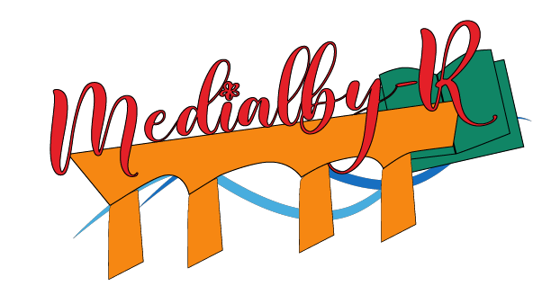

Biographie
Je suis étudiant en première année à l'IUT MMI d'Angoulême. Je suis passionné par le jeu vidéo et la programmation. J'ai pour ambition de devenir Game Designer. Cette formation m'enseigne le travail de développeur qui est une très belle découverte. J'ai étudié au Lycée Léonard De Vinci à Monistrol-sur-Loire et j'ai obtenu un Bac mention Bien spécialité Anglais et SES. Pour plus de détails Téléchargez mon CV ici.
Réalisations
Projet Ludwig
court métrage parodique d'un reportage scientifique
Logo MediaAlby
Réalisation d'un logo fictif pour la médiathéque d'Alby
Infographies/photographies
appuyez et scrollez !

Passions
Les Arts du spectacle

La danse, le chant, le théâtre tous ces médiums permettent d'exprimer tellement d'émotions. Ces domaines sont en quelques sortent mes pêchés je n'ai jamais eut le temps pendant mon enfant de pouvoir pratiquer un de ces domaines mais je reste très admiratif de leur travail.
Me contacter
- Téléphone : 01 23 45 67 89
- Email : contact@monportfolio.com
- Adresse : 12 rue des Champs, 75001 Paris